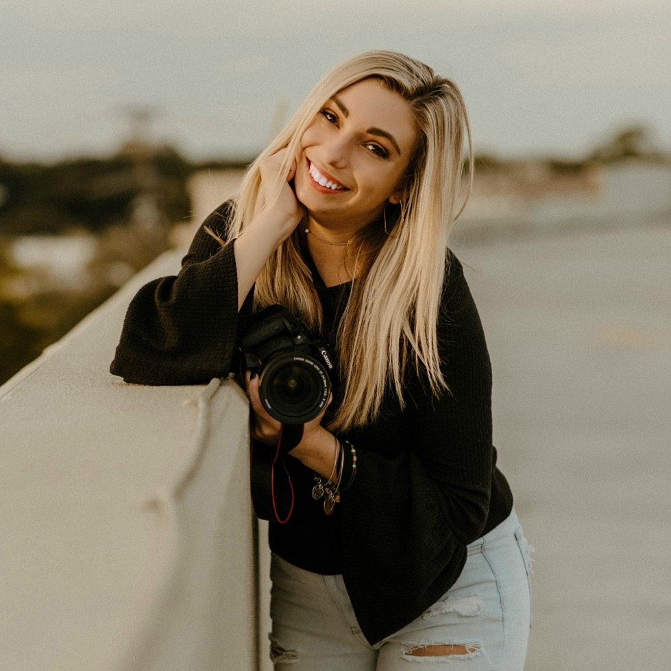

About Me
Hi! My name is Christy Digiandomenico. I am a Graphic Designer and Photographer based in Orlando, FL. I am originally from Northeastern Pennsylvania, also known as NEPA to the locals. We are known for the beautiful Poconos Mountains for wineries, shopping, and summer/winter outdoor activities. Most importantly, there is nothing like the food, especially the pizza. I found my way to the sunshine state after I finished college. I went to Shippensburg University of Pennsylvania for 4.5 years, and graduated with my Bachelor's Degree in Art with a focus in Graphic Design and Photography. During college, I joined the National Sorority Delta Zeta; was a part of television station, SUTV- the Director of PR and Web for the 2018 season; and a part of the Track and Field team during my Freshman year.
After my undergrad, I found my way to the sunshine state. I was accepted into the Disney College Program as a Photopass Photographer. It has been a dream to work at Walt Disney World, especially being based at the most magical parl, the Magic Kingdom. It such an amazing experience where I learned a lot about the hospitality industry, grew as a photographer, and as a person. I even booked my first wedding with a couple when I captured their surprise proposal on Main Street!
During my transition from being a Cast Member with the parks to landing my first graphic design job took a while. I decided it would be a great opportunity to go back to school. Currently I am in graduate school working toward my Master's of Web Design at the University of Florida. (Chomp Chomp!) My passion for the arts began at a young age. You would fine me dancing, drawing, or taking photographs anytime I had the chance. It became a part of my life, and continues to be an important part of my creative career and lifestyle.
I am the type of person who is constantly running around doing something because I can't sit still! I have a full time graphic design job, in graduate school, and a freelance Wedding/Lifestyle Photography business. When I'm not grinding in my career, you can find me at local coffee shops, breweries, hanging out with my friends, going to theme parks, and traveling. I am a lover of all aspects of art, a sports fan (Go Birds and Phils!!), a foodie, and a yogi. Guess you can say I'm a true Sagittarius!
Contact
- Phone: 570.436.6292
- Email: christydigian@gmail.com
- Social: @christydigianphotography